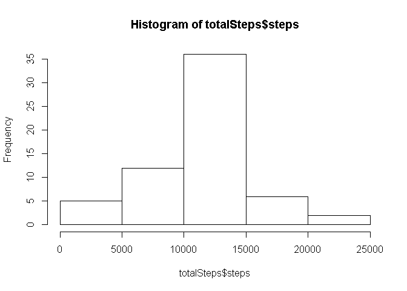

Reproducible Research: Peer Assessment 1
Loading and preprocessing the data
data <- read.csv("activity.csv")
Data <- data[which(data$steps!= "NA"), ]
DataF <- aggregate(steps ~ date, data = Data, sum)What is mean total number of steps taken per day?
hist(DataF$steps,main="Histogram of Steps",xlab="Steps")
- The mean of steps per day is 1.076618910^{4}
- The median of steps per day is 10765
What is the average daily activity pattern?
Make a time series plot (i.e. type = “l”) of the 5-minute interval (x-axis) and the average number of steps taken, averaged across all days (y-axis)
SInterval<-aggregate(steps~interval,data=Data,mean)
plot(steps~interval,data=SInterval,type="l")
- Which 5-minute interval, on average across all the days in the dataset, contains the maximum number of steps?
The interval with maximum number of steps is 835 th interval
Imputing missing values
Calculate and report the total number of missing values in the dataset
- The total de missing value is 2304
Devise a strategy for filling in all of the missing values in the dataset. Create a new dataset that is equal to the original dataset but with the missing data filled in
Sintervals<-function(interval){
SInterval[SInterval$interval==interval,]$steps
}
countInterval=0
for(n in 1:nrow(data)){
if(is.na(data[n,]$steps)){
data[n,]$steps<-Sintervals(data[n,]$interval)
countInterval=countInterval + 1
}
}- The total of NA values were filled is 2304
Make a histogram of the total number of steps taken each day and Calculate and report the mean and median total number of steps taken per day
totalSteps<- aggregate(steps ~ date, data = data, sum)
hist(totalSteps$steps)
- The mean total number of steps taken per day is 1.076610^{4}
- The median total number of steps taken per day is 1.076610^{4}
Are there differences in activity patterns between weekdays and weekends?
Create a new factor variable in the dataset with two levels – “weekday” and “weekend” indicating whether a given date is a weekday or weekend day.
data$day=ifelse(as.POSIXlt(as.Date(data$date))$wday%%6==0,"weekend","weekday")
data$day=factor(data$day,levels=c("weekday","weeked"))Make a panel plot containing a time series plot (i.e. type = “l”) of the 5-minute interval (x-axis) and the average number of steps taken, averaged across all weekday days or weekend days (y-axis).
sInterval=aggregate(steps~interval+day,data,mean)
library(lattice)
xyplot(steps~interval|factor(day),data=sInterval,aspect=1/2,type = "l")